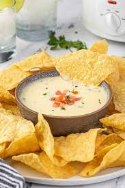

Queso

Description
This recipe will show you how to make the cheesiest queso, with a hint of spice. This queso will be perfect for Super Bowl parties paired with delicious crunchy tostitos chips.
Ingredients
- Chili Powder
- Evaporated Milk
- White American Cheese
- Red Pepper Flakes
- Cornstarch
- Chili Powder
Steps
- Heat Evaporated milk and whisk it in cornstarch.
- Stir in your cheese until fully melted
- Stir in any add-ins,red pepper and chili powder
- ENJOY with chips.